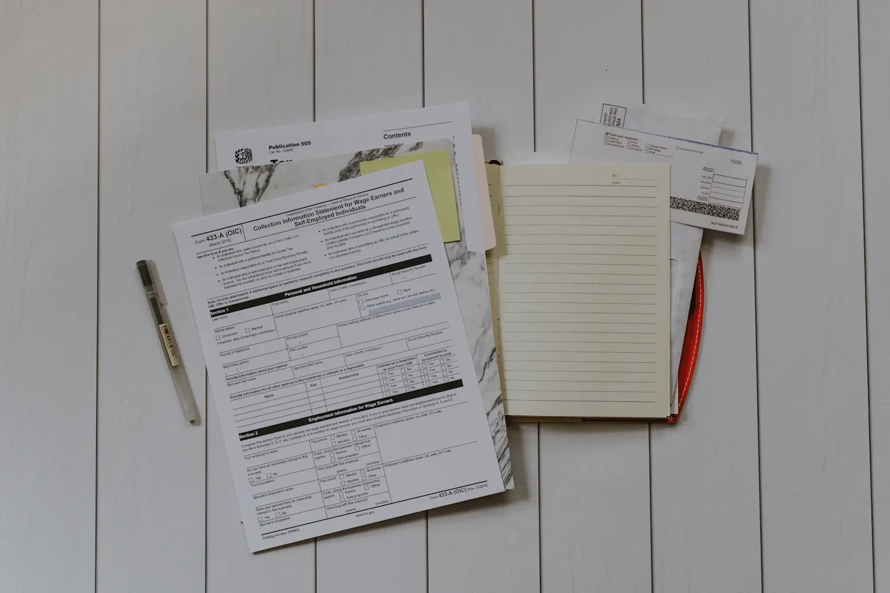

Waarvoor u bij mij terechtkunt
Vier domeinen, al decennia.

Familierecht
Echtscheiding, huwelijksvermogen en erfrecht. Liefst via bemiddeling.
Vraag over familie
Aansprakelijkheid
Verzekeringen en verkeer. Na een ongeval krijgt u wat u toekomt.
Vraag over schade
Contracten
Onbetaalde facturen, huur, eigendom en aanneming.
Vraag over een contract
Strafrecht
Bijstand bij verhoren, ook voor minderjarigen, en verdediging.
Vraag over strafrechtJeugdzakenCollectieve schuldenregelingDeskundigenonderzoekBemiddeling